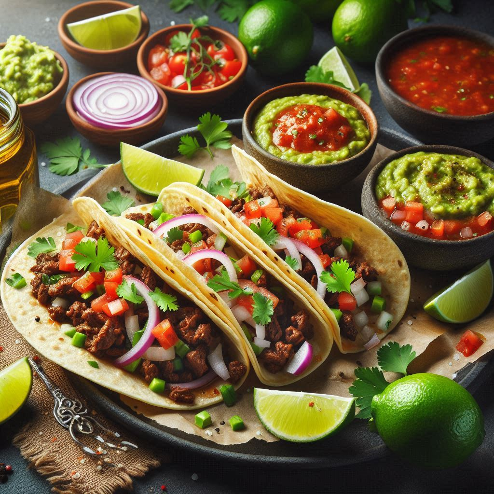

Back To All Recipes
Taco's Recipe

The tacos are a celebration of simplicity and authentic Mexican flavors, crafted with care to
highlight each ingredient. The star is the tender, perfectly seasoned beef, cooked to perfection and
offering a rich, savory base. This is complemented by freshly chopped onion, lending a mild, crisp
bite, and vibrant cilantro, which adds a burst of freshness to every mouthful.
A generous drizzle of zesty, homemade salsa ties the flavors together, delivering a spicy kick that
excites the palate without overwhelming it. On the side, creamy guacamole provides a cooling contrast,
while wedges of fresh lime invite you to add a bright, citrusy twist. Served on warm, soft corn
tortillas, these tacos are a harmonious blend of textures and tastes, embodying the essence of
traditional Mexican cuisine. Each bite is a journey to a bustling Mexican taqueria, where simplicity
meets flavor in the most delicious way. 🌮
Ingredients
- Beef – Tender and seasoned to perfection.
- Onion – Freshly chopped for crunch and mild sweetness.
- Cilantro – Vibrant and zesty for added freshness.
- Salsa – Homemade, bold, and spicy.
- Corn Tortillas – Warm and soft.
- Guacamole – Creamy and smooth.
- Limes – Juicy wedges for a citrusy twist.
Steps to Prepare
- Prepare the Beef: Season the beef with salt, pepper, and spices like cumin and chili powder.
Cook it in a skillet over medium heat until tender and fully cooked. Set aside.
- Chop Ingredients: Finely chop fresh onion and cilantro, ensuring they’re ready
for topping.
- Make Salsa: Blend fresh tomatoes, chili peppers, garlic, lime juice, and salt to create a bold,
homemade salsa.
- Warm the Tortillas: Heat the corn tortillas on a skillet or directly over a flame until
soft and pliable.
- Assemble the Tacos: Place cooked beef on a warm tortilla, then top with onion, cilantro, and salsa.
- Add Sides: Serve with guacamole and lime wedges for extra flavor.
Back To All Recipes